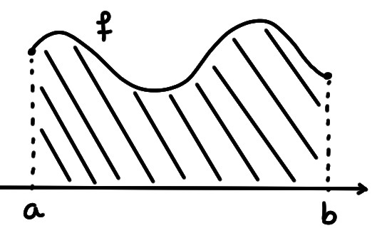
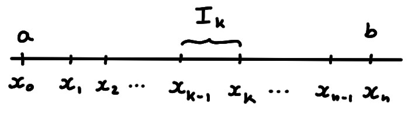
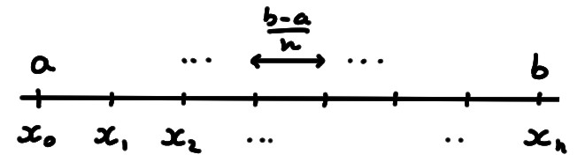
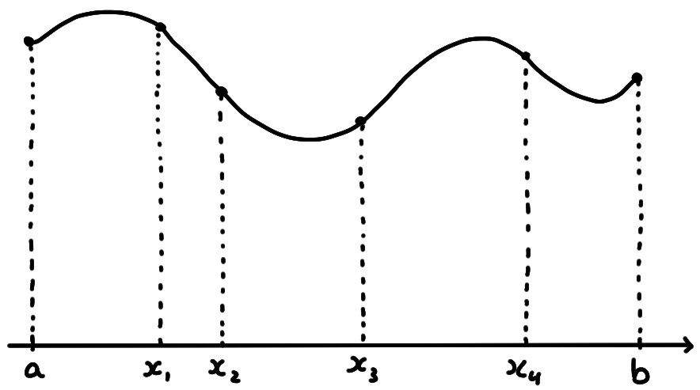
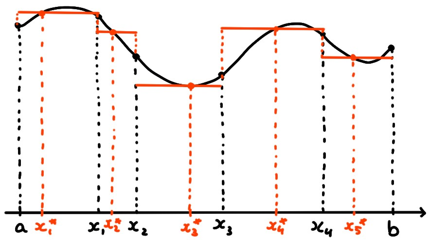
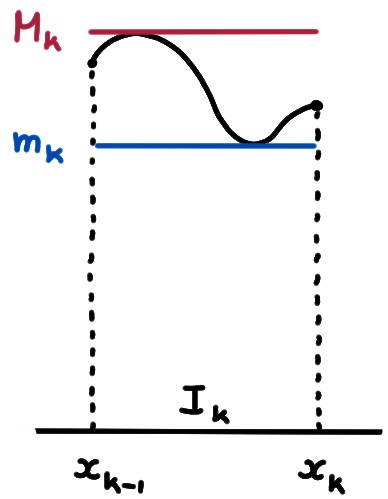

Attention: Dans
la vidéo ci-dessous, l'intégrale est présentée pour des fonctions qui sont
toujours supposées continues, ce
qui change un peu par rapport à l'exposé donné ici, en particulier les
définitions des sommes de Darboux.
Dans toute cette section, on fixera une fonction bornée
\(f:[a,b]\to \mathbb{R}\).
Pour garder en tête l'interprétation en terme d'''aire sous la courbe'', les
illustrations se feront la plupart du temps pour une fonction positive.

Pourtant, la définition de l'intégrale de Riemann que l'on va donner ci-dessous
est indépendante du signe de la fonction sur l'intervalle!
Sommes de Riemann, intégrale de Riemann
L'idée générale de base de l'intégration est d'approximer une région compliquée à l'aide d'une union de régions simples.
Dans l'intégrale de Riemann, les ''régions simples'' utilisées sont
des rectangles.
La première étape est de diviser l'intervalle:
On appelle subdivision
(aussi: partition)
de l'intervalle \([a,b]\) toute collection ordonnée de nombres
\[
a=x_0\lt x_1\lt x_2\lt \cdots \lt x_{n-1}\lt x_n=b\,.
\]
On notera en général une subddivision par la lettre
\[\sigma=(x_0,x_1,x_2,\cdots,x_{n-1},x_n)\,.\]
Soit \(\sigma=(x_0,x_1,x_2,\cdots,x_{n-1},x_n)\) une subdivision de \([a,b]\).
On définit, pour tout \(k\in \{1,\dots,n\}\), l'intervalle
\[I_k:=[x_{k-1},x_k]\,.\]

Notons qu'en général, les intervalles \(I_1,I_2,\dots,I_n\)
ne sont pas forcément tous de même longueur.
On appelle subdivision régulière (à \(n\) éléments) de \([a,b]\) la
subdivision dont les intervalles \(I_k\) ont tous taille \(\frac{b-a}{n}\),
c'est-à-dire pour laquelle \(x_k=a+k\frac{b-a}{n}\):
\[
\sigma=\bigl(
a,a+\tfrac{b-a}{n},
a+2\tfrac{b-a}{n},
\dots,
a+(n-1)\tfrac{b-a}{n},
b
\bigr)
\]

Une fois que l'on se donne une subdivision, on peut l'utiliser pour diviser la
région sous le graphe de \(f\) en régions plus fines, qui commencent à
ressembler à des rectangles:

Soit
\(\sigma=(x_0,x_1,x_2,\cdots,x_{n-1},x_n)\) une subdivision de \([a,b]\).
En choisissant, pour tout \(k\in \{1,\dots,n\}\), un élément
\[x_k^*\in I_k\,,\]
on peut définir la somme de Riemann (associée à la subdivision \(\sigma\)
et au choix des points \(x_k^*\)):
\[ S_\sigma^*(f):=
\sum_{k=1}^nf(x_k^*)(x_{k}-x_{k-1})
\]
Dans le cas où \(f(x)\geqslant 0\), on peut interpréter la somme de Riemann de la
façon suivante: la longueur de l'intervalle \(I_k\) étant \(x_k-x_{k-1}\),
\(f(x_k^*)\) représente la hauteur d'un rectangle donc le côté supérieur touche
le graphe de \(f\), et donc la somme
\[ S_\sigma^*(f):=
\sum_{k=1}^n\underbrace{f(x_k^*)\underbrace{(x_{k}-x_{k-1})}_{\text{longueur de
}I_k}}_{\text{aire du rectangle }k}
\]
représente une somme d'aires de rectangles:

Si les rectangles on des bases suffisamment petites, la somme de leurs aires
approxime l'aire sous le graphe de \(f\).
Intuitivement, plus le nombre de points de la subdivision devient grand, mieux la
somme de Riemann approxime l'aire sous la courbe.
On aimerait donc, idéalement, faire quelque chose comme
''\(\lim_{n\to\infty}S_{\sigma}^*(f)\)''. Seulement la limite que l'on doit
considérer ici est bien plus compliquée que juste
''faire tendre \(n\) vers l'infini''.
En effet, une
subdivision \(\sigma\)
n'est pas spécifiée simplement par l'entier \(n\), mais par les
positions exactes des points \(x_k\), \(k=0,1,2,\dots,n\).
Avec \(n\), augmente aussi le nombre de
choix que l'on doit faire des points \(x_k^*\), \(k=1,2,\dots,n\).
C'est la difficulté de la définition de l'intégrale: le processus de limite est
plus compliqué.
Pour obtenir la ''vraie'' aire sous la courbe on aimerait donc
prendre des subdivisions de plus en plus fines, c'est-à-dire contenant
toujours plus de points, et telles que chacun des intervalles \(I_k\),
\(k=1,2,\dots,n\), devienne arbitrairement petit.
On mesurera la ''finesse'' d'une subdivision
\(\sigma=(x_0,x_1,x_2,\cdots,x_{n-1},x_n)\) de \([a,b]\) par le nombre
\[
|\sigma|:=
\max_{k=1,2,\dots,n}|x_k-x_{k-1}|\,.
\]
Intuitivement, dès que la partition est suffisamment fine, c'est-à-dire si
\(|\sigma|\) est suffisamment petit, alors la somme de Riemann \(S_\sigma^*(f)\)
ne doit plus vraiment changer, et prendre une valeur très proche de la ''vraie''
aire sous la courbe.
C'est l'idée qui est derrière la définition suivante, peu digeste au premier
abord...
On dit que \(f:[a,b]\to \mathbb{R}\) est intégrable (au sens de Riemann) si il
existe un réel \(I\) tel que la propriété suivante soit vérifiée:
pour tout \(\varepsilon\gt 0\), il existe un \(\delta\gt 0\) tel que pour une
subdivision quelconque \(\sigma\) satisfaisant \(|\sigma|\leqslant \delta\),
et pour un choix quelconque des points
\(x_k^*\), la somme de Riemann associée \(S_\sigma^*(f)\) satisfait
\[
|S_\sigma^*(f)-I|\leqslant \varepsilon\,.
\]
Le réel \(I\) est alors appelé intégrale (de Riemann) de \(f\), et on le
note:
\[ I=\int_a^b f(x)\,dx\,.
\]
Bien que naturelle, l'intégrale de Riemann est un objet qui ne se laisse pas
facilement manipuler. Donc avant de commencer à étudier ses propriétés,
voyons une façon alternative de la définir.
Sommes de Darboux, intégrale de Darboux
Pour une subdivision donnée
\(\sigma=(x_0,x_1,x_2,\cdots,x_{n-1},x_n)\), introduisons
pour tout \(k\in \{1,\dots,n\}\), les nombres
\[
m_k:= \inf_{x\in I_k}f(x)\,,\qquad
M_k:= \sup_{x\in I_k}f(x)\,,
\]

Puisqu'on suppose que \(f\) est bornée, ces nombres sont finis. Aussi, rappelons
que dans le cas où \(f\) est continue, elle atteint son maximum et son minimum
sur chaque intervalle \(I_k\), et donc il est possible de choisir
\(x_{k*}\) et \(x_{k}^*\) dans \(I_k\), tels que
\[
m_k:= \min_{x\in I_k}f(x)=f(x_{k*})\,,\qquad
M_k:= \max_{x\in I_k}f(x)=f(x_k^*)\,.
\]
On peut alors définir deux sommes
associées à la subdivision \(\sigma\):
La
somme de Darboux inférieure,
\[
\underline{S}_\sigma(f):= \sum_{k=1}^nm_k(x_{k}-x_{k-1}) \,,
\]
la
somme de Darboux supérieure,
\[
\overline{S}_\sigma(f):= \sum_{k=1}^nM_k(x_{k}-x_{k-1}) \,.
\]
Faisons deux remarques qui montrent tout l'avantage des sommes de Darboux.
D'abord, quel que soit le choix du point \(x_k^*\in I_k\),
on a \(m_k\leqslant f(x_k^*)\leqslant M_k\), et donc
toute somme de Riemann est minorée par la somme de Darboux inférieure, et
majorée par la somme de Darboux supérieure:
\[
\underline{S}_\sigma(f)\leqslant S_\sigma^*(f)\leqslant \overline{S}_\sigma(f)\,.
\]
Ensuite, dans le cas où \(f(x)\geqslant 0\),
\(m_k(x_k-x_{k-1})\) (resp. \(M_k(x_k-x_{k-1})\))
représente aussi l'aire d'un rectangle. Mais à
l'inverse des rectangles apparaissant dans
la somme de Riemann, son côté supérieur est situé en-dessous (resp.\
en-dessus) du graphe de \(f\).
Donc la vraie aire sous le graphe peut toujours être minorée et majorée par les
sommes de Darboux:
\[
\underline{S}_\sigma(f) \leqslant \text{aire} \leqslant \overline{S}_\sigma(f)\,.
\]
Voyons maintenant un autre avantage des sommes de Darboux: elle jouissent d'une
propriété de monotonicité par rapport aux points de la subdivision.
Soit \(\sigma=(x_0,x_1,\dots,x_{k-1},x_k,\dots,x_n)\) une subdivision de
\([a,b]\), et soit
\(\sigma'=(x_0,x_1,\dots,x_{k-1},y,x_k,\dots,x_n)\) la subdivision obtenue en
rajoutant un point \(y\) à \(\sigma\), entre \(x_{k-1}\) et \(x_k\). Alors
\[
\underline{S}_{\sigma}(f)
\leqslant
\underline{S}_{\sigma'}(f)
\leqslant
\overline{S}_{\sigma'}(f)
\leqslant
\overline{S}_{\sigma}(f)\,.
\]
A priori, \(\underline{S}_\sigma(f)\) et \(\overline{S}_\sigma(f)\) sont des
nombres différents:
\(\underline{S}_\sigma(f)\lt \overline{S}_\sigma(f)\). Mais,
puisque les sommes de Darboux ne peuvent que se rapprocher lorsque le nombre de
points de la subdivision augmente, il est naturel de voir si on peut les rendre
arbitrairement proches en prenant des subdivisions toujours plus fines:
Pour \(f:[a,b]\to \mathbb{R}\), on définit les nombres
\[\begin{aligned}
\underline{S}(f)&:= \inf_\sigma \underline{S}_\sigma(f)\,,\\
\overline{S}(f)&:= \sup_\sigma \overline{S}_\sigma(f)\,.
\end{aligned}\]
Si \(\underline{S}(f)=\overline{S}(f)\equiv S\),
on dit que \(f\) est intégrable au sens de Riemann/Darboux. On
appelle le nombre \(S\) l'intégrale de \(f\), et on le note
\[S=\int_a^bf(x)\,dx\,.\]
Par convention, on définit
\[
\int_a^a f(x)\,dx:= 0\,.
\]
Le symbole \(\int_a^b f(x)\,dx\) représente un nombre, qui ne dépend pas du
''\(x\)'' qui apparaît deux fois. On appelle ce ''x''
une variable d'intégration. C'est une variable
muette, dans le sens où elle est
uniquement utilisée pour construire l'intégrale; l'intégrale n'en dépend pas
explicitement. Donc on pourrait aussi écrire
\[
I
=\int_a^bf(z)\,dz
=\int_a^bf(\alpha)\,d\alpha
=\int_a^bf(m)\,dm=\cdots
\]
À propos de la terminologie:
Le symbole \(\int\), apparemment
introduit par Newton, est une espèce de ''S'', qui rappelle l'origine de
l'intégrale: ''somme''.
Le ''\(f(x)dx\)'' rappelle son origine dans la somme de Riemann:
''\(f(x_k^*)\Delta x_k\)''. Dans la limite où le nombre de rectangles tend vers
l'infini, la largeur de chacun de ces rectanges, \(\Delta x_k\) devient devient
infinitésimale, ''\(dx\)''.
Soit \(f:[a,b]\to \mathbb{R}\) une fonction bornée, \(\sigma\) une subdivision de
\([a,b]\), \(S_\sigma^*(f)\) une somme de Riemann associée, et
\(\overline{S}_\sigma(f)\) et
\(\underline{S}_\sigma(f)\) les sommes Darboux supérieures et inférieures.
Vrai ou faux?
[ ] Si \(\underline{S}_\sigma(f)=\overline{S}_\sigma(f)\), alors \(f\) est
intégrable.
[ ] Si \(f\) est constante, alors
\(S^*_\sigma(f)=\overline{S}_\sigma(f)=\underline{S}_\sigma(f)\).
[ ] Si \(\underline{S}_\sigma(f)\lt \overline{S}_\sigma(f)\), alors \(f\)
n'est pas intégrable.
[ ] Si \(g:[a,b]\to \mathbb{R}\) est aussi bornée, telle que \(f(x)\leqslant g(x)\)
pour tout \(x\in [a,b]\), alors \(\overline{S}_\sigma(f)\leqslant
\overline{S}_\sigma(g)\).
[ ] Si \(\sigma'\subset \sigma\), alors
\(\overline{S}_{\sigma'}\geqslant \overline{S}_\sigma(f)\) et
\(\underline{S}_{\sigma'}\leqslant \underline{S}_\sigma(f)\).
[ ] Si \(\sup_\sigma
\underline{S}_\sigma(f)=\inf_\sigma\underline{S}_\sigma(f)\), alors \(f\) est
intégrable.